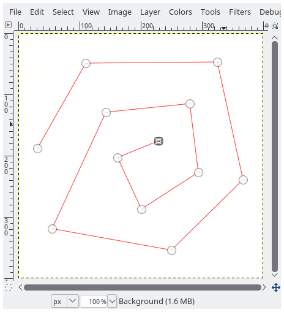
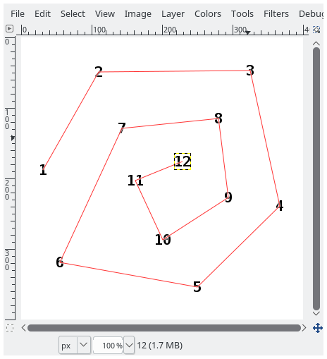

This script adds sequential number labels to an image, using a path
Create a path using the Path tool, and click on the places where you want number labels to appear:

Invoke the script to create the labels (Filters>Render>Sequence numbers on anchors)

Path: the path to useFont, Font size: the fontStart: the starting number of the sequenceOffset X, Offset Y: a shift of the centers of the labels from the anchors positions.
Positive numbers shift down and to the right. If both are 0 the label is centered on the anchor.